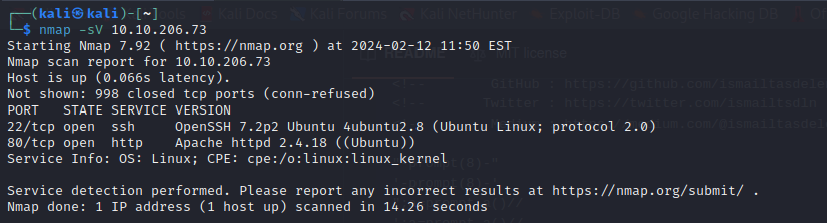
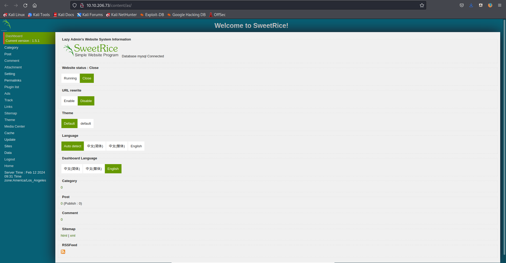

LazyAdmin CTF
2024-02-12
Standardowo zaczęło się najpierw od nmap a potem gobuster.
Aplikacja używa CMS SweetRice oraz posiada poddatność polegającą na ładnym dostępie do bazy danych
Po pobraniu pliku mysql i wyświetleniu go można dostrzec nazwe konta oraz hasło w formie hasha.

Po sprawdzeniu z pomocą narzędzia hashid okazuję się że jest to MD5 przez co udaje się łatwo wydobyć hasło.
Po zalogowaniu się na konto admina sprawdzam wersję CMSa i szukam podatności w bazie exploitdb.
Po krótkim zapozaniu się używam podatności Cross-Site Request Forgery / PHP Code Execution która tak jak jest to opisane na poniższym zdjęciu używa zakładki ads żeby umożliwić wykonywanie pliku php.
Zawartość wklejam do formularza oraz w miejscu kodu php wklejam php reverse shell ze strony https://github.com/pentestmonkey/php-reverse-shell/blob/master/php-reverse-shell.php edytuje tylko adres ip oraz port.
Oczywiście włączyłem nasłuchiwanie na porcie 1400 który wcześniej ustawiłem w kodzie php. I tak o to udaje mi się zdobyć pierwszą, prostszą

Przy okazji nauczyłem się jak usprawnić sobie poruszanie się po shellu

A następnie zabrałem sie za uzysaknie praw roota które były konieczne do ostaniej flagi.

Link do CTFa: https://tryhackme.com/room/lazyadmin